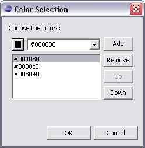

You can set color values in several layout attributes and theme properties.
You can choose either one of the 16 pre-defined system colors from a drop-down, or from color values defined on the users machine. Alternatively, you can select another basic or custom color using a color picker.
Clicking the button on the left of the drop-down opens the color picker. It also shows the color you have selected. The name (if it is a standard or user machine color) or the hexadecimal color value is displayed in the drop-down.
You can also type or paste a hexadecimal value into the drop-down.
When you are choose colors for a chart theme, you can select a foreground color for each of the chart data sets.
To add a chart color:
The ordered color list is displayed in the control.

To remove a color from the list, open the dialog, select a color, and click Remove.
Related information
Setting style
properties
Style
property categories
Chart properties